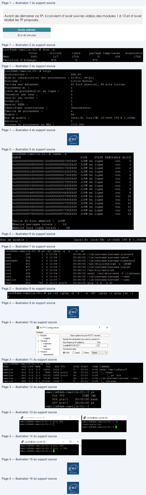

Transcription du document du Drive TSSR. La mise en forme est adaptée au Web ; les compléments IA du portail sont présentés séparément.
Administration Debian GNU/Linux
TP du Module 12 – Maintenance d'un système en production
Avant de démarrer ce TP, il convient d’avoir suivi les vidéos des modules 1 à 12 et d’avoir
réalisé les TP proposés.
Durée estimée
20 à 45 minutes
I.
Relevé d’informations : sur le serveur sans environnement
graphique
•
Afficher les informations sur la mémoire
o Combien de mémoire RAM est utilisée ?
o Combien de mémoire SWAP est utilisée ?
o Combien de mémoire RAM est réellement libre ?
117 MO de ram sont ici utilisés. 975 MO de swap le sont également (mais partagé).
Ici pour connaitre la totalité de la ram disponible, il faut additionner la valeur de la colonne libre avec la
valeur de la colonne tamp/cache (utilisation système pour améliorer les performances, libérable si besoin)
•
Afficher les informations détaillées sur le processeur et la mémoire
lscpu donne de nombreuses informations sur les processeurs
Page 1/4
© ENI – Tous droits réservés
BE
rootédeb-camille-01:-#
free
-m
total
utilisé
libre
partagé
tamp/ cache
disponible
Mem:
1951
117
1729
a
104
1708
Partition d'échange:
975
a
975
root@deb-camille-O1:~#
lscpu
Architecture
:
x66
64
Mode(s)
opératoire(s)
des processeurs
:
32-bit,
64-bit
Boutisme
:
Little
Endian
Tailles
des
adresses:
43
bits
physical,
48 hits virtual
Processeur(s)
:
1
Liste
de
processeur(s)
en
ligne
:
(el
Thread(s)
par
cœur
:
1
Cœur (s)
par
socket
:
1
Socket (s])
:
1
Neud(s)
NUMA
:
1
Identifiant
constructeur
:
Genuinelntel
Famille
de
processeur
:
6
Modèle
:
94
Nom
de modèle
:
InteliR)
Core(TM)
i5-6600
CPU
@
3.30GHz
Révision
:
3
Vitesse
du
processeur
en
MHz
:
3312.000
Administration Debian GNU/Linux
Lsmemavec l'option -a donne des informations complète sur la mémoire
o Quel type de processeur a été détecté ?
•
Afficher tous les processus relatifs à des démons (dont le nom finit par un "d")
ps -ef permet de lister tous les processus.
grep avec l'option -e répétée permet de donner plusieurs informations de filtre (fonction logique OU)
-e 'd ' valide la lettre d suivi d'un espace ; -e 'd$' valide la lettre suivie du caractère fin de ligne.
A noter la dernière grep qui est ici un "faux positif" de la sortie
Alternatives :
•
Meilleure commande compacte et sûre (compte des processus dont le nom se termine par d) :
ps -eo comm --no-headers | awk '/d$/ {count++} END{print count+0}'
•
Si vous voulez aussi PID et utilisateur (plus utile pour un TP) :
ps -eo pid,user,comm --no-headers | awk '3 /d/ {print $0}'
• Si vous tenez à wc -l mais sans faux positifs : ps -eo comm --no-headers | grep -E 'd$' | wc -l
o Afficher leur nombre
Reprenant la ligne précédent, on ajout un grep -v grep pour supprimer le "faux positif"
Puis on compte le tout avec la commande wc.
Page 2/4
© ENI – Tous droits réservés
roothdeb-camille-Ol:~#
lsmem -a
RANGE
SIZE
STATE
REMOVABLE
BLOCK
OxO000000000000000-0x0000000007Éfffff
126M en
ligne
oui
a
Ox*O0000000008000000-0XO00000000FFÉFÉÉE
128M en
ligne
oui
1
oxoooooooo Looo00000-Oox00000000LTLELELEE
126M en
ligne
oui
2
OxOO0000001s000000-Oxo00000001ffftfff
128M en
ligne
oui
3
Ox*0000000020000000-0x000000002%€£fffff
128M en
ligne
oui
4
lox ooo000002 B000000-Ox00000000zZffEffff
128M en ligne
oui
5
OxO0000000030000000-0*0000000037££Éf{{f
1268M en
ligne
oui
6
OxO0000000036000000-0xO000000003ÉÉÉ£ffff
126M en
ligne
oui
7
OxO0000000040000000-0KO000000004TÉÉITÉÉT
1£SM en
ligne
qui
5
Ox*O0000000048000000-0XO000000004ÉÉÉFÉCE
128M en
ligne
oui
9
OxO0000000050000000-0xXO0000000057ÉÉÉÉÉÉ
128M en
ligne
oui
10
OxOoooooooSsso000000-Ox000000005ffffffFfF
1268M en
ligne
oui
11
Ox*0000000060000000-0x0000000067££ffff
128M en
ligne
oui
12
Ox OO0o00000s6so000000-Ox000000006fffffff
128M en
ligne
oui
13
oxoooooooo FO000000-Ox00000000FTLELLFE
1268M en
ligne
oui
14
OxO0000000078000000-0xO000000007ÉfÉFÉCÉ
128M en
ligne
oui
15
Taille
du bloc mémoire
:
126M
Mémoire partagée totale
:
2G
Mémoire
hors
ligne totale
:
OB
root@deb-camille-O1:~#
ps
-ef
|grep
-e
'd
'
-e
'df$'
root
247
1
O
13:54
?
00:00:00
/lib/systemd/systemd-journald
root
268
1
O
13:54
?
00:00:00
/lib/systemd/systemd-udevd
systemd+
462
1
O
13:54
?
00:00:00
/lib/systemd/systemd-timesyncd
root
472
1
O
13:54
?
00:00:00
/usr/sbin/rsyslogd
-n -iNONE
root
473
1
O
13:54
?
00:00:00
/lib/systemd/systemd-logind
root
477
1
0
13:54
?
00:00:13
/usr/bin/vmtoolsd
root
565
1
O
13:54
?
00:00:00
sshd:
/usr/sbin/sshd
-D
[listener]
root
609
1
0
13:56
?
00:00:00
/lib/systemd/systemd
--user
camille
621
1
0
13:57
?
00:00:00
/lib/systemd/systemd --user
Pig aes
=
En
Administration Debian GNU/Linux
II.
Intervention sur les processus
•
Ouvrez une session SSH avec le login utilisateur (pas le compte root)
o Lister tous les processus relatifs à votre login de façon détaillée
ps -fux est une des méthodes pour lister tous les processus de l'utilisateur. Il en existe plusieurs autres avec ps.
•
Lister dans un fichier tous les processus correspondant aux connexions Putty
Un classique enchainement de ps et grep avant de transférerle résultat dans un fichier
•
Arrêter un processus lancé
o Lancer une seconde session Putty et ouvrir une session avec votre login utilisateur
o Repérer le n° de processus (PID) relatif au shell de cette seconde session Putty
ps sans options ni arguments affiche, entre autre, le processus du shell actuel et son PID, ici 954
o Depuis votre 1ere session, tenter d'arrêter votre second shell (avec le signal par
défaut)
La commande kill lancée sans argument via la première session n'arrête pas la session.
o Depuis votre 1ere session, arrêter définitivement votre second shell (avec le signal
adapté)
En ajoutant l'option forçant le signal 1 (SIGHUP) la session est coupée
Page 3/4
© ENI – Tous droits réservés
#R PUTTY Configuration
?
x
Category:
Session
Basic options for your PuTTY session
T
roasing
Specify the destination you want to connect to
=
erminal
Host Name (or IP address]
Port
Keyboard
Bel
{camile@10.49.222.1
[22
Features
Connection type:
Gr Window
@SSH
OSerial
O Other: | Telnet
v
Appearance
camilletdeb-camille-Ol:~§
ps
-rux
USER
PID
%CPU
%MEM
VSZ
RSS
TTY
STAT
START
TIME
COMMAND
camille
913
0.0
0.3
14652
6124
?
5
15:51
0:00
sshd:
camille@pts/O
camille
914
0.0
0.2
7840
4600
pts/0
$s
15:51
O:00
\_
-bash
camille
925
0.0
O.1
10136
3608 pts/0
R+
15:53
0:00
\_ ps -fux
camille
903
0.0
0.4
15140
8208
?
Ss
15:51
0:00
/lib/systemd/systemd
--user
camille
904
0.0
O.1
101292
2668
?
$s
15:51
0:00
\_
(sa-pam)
camillefdeb-camille-Ol:i~§
ps -ef
[grep sshd
[grep -¥ grep
>
liste-putty.txt
camillefdeb-camille-Oi:~§
ps
PIL
TTY
TIME
CHD
954 pte/i
00:00:00 bash
957 pts/l
00:00:00
ps
camilleldeh-camille-01:-$
La
8 camille@deb-camille-01: ~
camillefdeb-camille-01:-$
kill
954
Me
camille@deb-camille-01:~$
1s
cami lle@deb-camille-01:~$
liste-putty.txt
camillefdeh-camille-01:-$
8 camille@deb-camille-01: ~
-
Oo
x
cami lle@deb-camille-O1:~$ kill 954
A
camillefdeb-camille-01:-$
kill
-1
954
camille@deb-camille-01:~$
+
en
Administration Debian GNU/Linux
Autre proposition :
1.
Ouvrir la 2e session PuTTY et se connecter sous votre même compte.
2.
Dans la 2e session, repérer le PID du shell :
•
Exécuter : ps -o pid,tty,cmd -u (whoami)−−no−headers∣grep"(tty)" ou plus simplement :
ps -o pid= -p $ # affiche le PID du shell courant
3.
Depuis la 1re session, envoyer le signal par défaut (SIGTERM) au PID trouvé :
•
Commande : kill
•
Effet : demande poliment au processus de se terminer. Le shell peut ignorer ou intercepter SIGTERM
(ex : shell interactif). Vérifier si le processus a disparu : ps -p && echo "toujours actif" || echo "terminé"
4.
Si le shell ne se termine pas, envoyer SIGKILL pour forcer l’arrêt :
•
Commande : kill -9 ou kill -KILL
•
Effet : terminaison immédiate et non interceptable. Vérifier la disparition : ps -p || echo "terminé
définitivement"
Remarques pratiques :
•
Préférez toujours SIGTERM (kill) puis, si nécessaire, SIGKILL (kill -9).
•
Pour éviter d’envoyer les signaux au mauvais processus, vérifiez le PID et le tty (ps -o pid,tty,cmd). Exemple
de vérification complète depuis la 1re session : ps -u $(whoami) -o pid,tty,cmd --no-headers | grep pts/1
•
Ne tuez pas de processus système ni un shell que vous n’avez pas prévu d’interrompre.
Page 4/4
© ENI – Tous droits réservés
